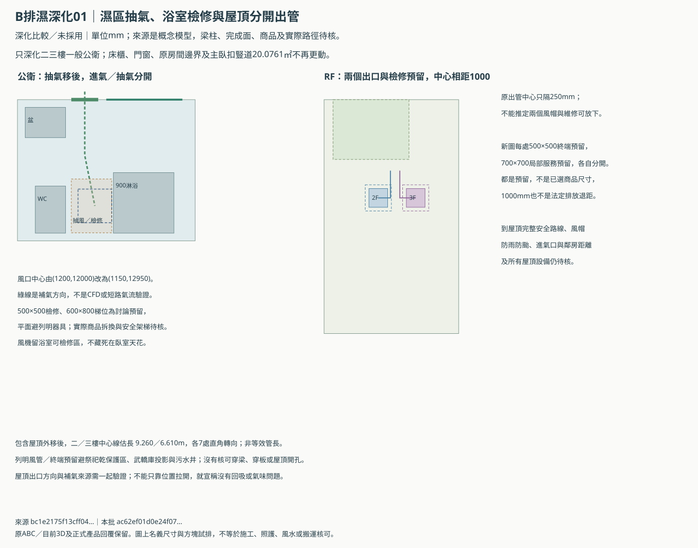
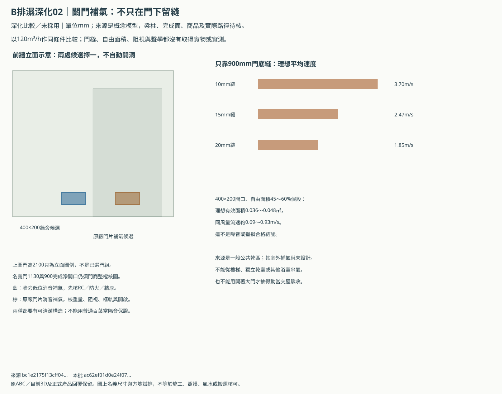
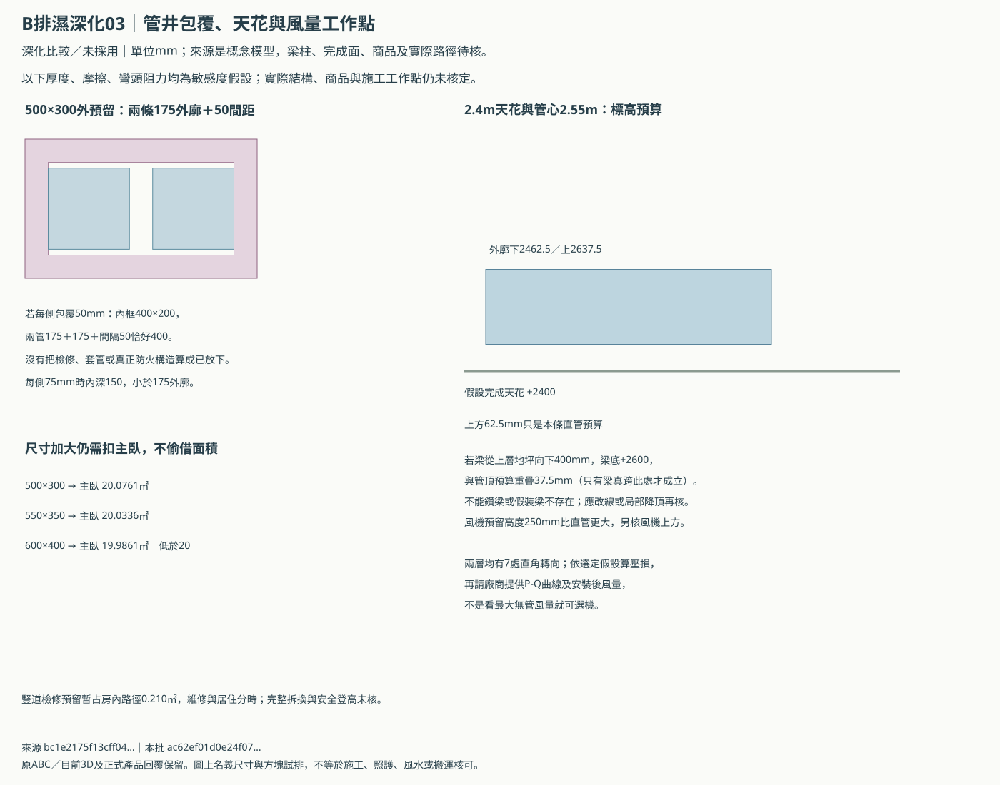

B排濕續作：把補氣、檢修與發包條件一起畫出來
二、三樓一般公衛的抽風口移向後方濕區，屋頂兩個終端另留分開位置；同時補關門補氣、管井包覆及施工回覆表。
工程討論預案，尚未採用。 屋主尚未明確選擇無窗公衛或接受兩衛面積取捨；繼續研究不代表同意。主臥仍估20.0761㎡、公衛4.4667㎡、套衛4.7124㎡，原20／5／6㎡目標不變；原3D與一樓前後門三態保留。
先修正排濕位置與維修預留
抽氣口由(1200,12000)移至(1150,12950)，減少貼近前方補氣處的疑慮；風管在後方再繞到主臥前臂豎道，列明外廓避床、祭祀保護區、武轎庫與污水井。這只是幾何配置，沒有CFD或實測短路氣流通過結論。
原屋頂兩根豎管中心只隔250mm，現在另畫每處500×500終端及700×700局部檢修預留，中心隔1000mm。這些不是商品尺寸或法定退距；風帽、防水防颱、周圍開口與完整屋頂安全路線仍需核圖。
含屋頂外移後，二／三樓中心線估長9.260m／6.610m，各7次直角轉向。屋頂外移需要新的彎頭，不能沿用上輪估長當最終風機條件。
風機與檢修口留在公衛；模型內的500×500檢修口與600×800梯位未碰列明器具。主臥豎道檢修會暫占房內路徑，維修和居住分時，不能說所有狀態都暢通。
三張新圖





關著門，也要有可驗證的補氣來源
| 理想開口／120m³/h | 面積㎡ | 平均速度m/s |
|---|---|---|
| 900mm門底10mm縫 | 0.0090 | 3.70 |
| 900mm門底15mm縫 | 0.0135 | 2.47 |
| 900mm門底20mm縫 | 0.0180 | 1.85 |
| 400×200，假設自由面積45% | 0.0360 | 0.93 |
| 400×200，假設自由面積60% | 0.0480 | 0.69 |
以上按理想開口算平均速度，不能據此認定某門縫一定夠或一定吵。先讓建商比較「原廠門片消音補氣」及「門旁牆消音補氣」兩種完整做法，400×200mm只是候選開口，實際自由面積與壓損不得用標稱長寬代替。
低位補氣仍要阻視、可清潔及聲學實測。門片方案須核整樘門厚、重量、把手、開啟與900mm完成淨寬；牆旁方案先核RC／牆厚／防火，不自動在未知結構上開孔。它們是替代方案，不累計兩個洞來湊風量。
一般公共乾區只是中間補氣來源；其室外進氣、關窗和同時排風的壓力平衡尚未設計。不能借樓梯、獨立乾保護室、其他浴廁、神明堂排煙或污水通氣管補氣；也不以開著大門才抽得動當完成。
管井放得下管，不等於完整構造已放下
| 管井外預留mm | 扣後主臥㎡ | 相對20㎡目標 |
|---|---|---|
| 500×300 | 20.0761 | 估算暫達，未核真實構造 |
| 550×350 | 20.0336 | 估算暫達，未核真實構造 |
| 600×400 | 19.9861 | 不足，不能自動加大採用 |
兩條外廓175mm風管加50mm假設間距需400mm；500×300mm外預留若每側包覆50mm，內框只400×200mm，寬度恰好沒有餘量。這假設管中心隨完成內牆重新排，不是原中心點不動仍適用。每側75mm時內深只150mm，放不下175外廓。
選定真實構造前，不採用550×350厚壁預案，也不把600×400放大當已解；後者主臥估19.9861㎡，低於原20㎡目標。
假設2400mm完成天花、2550mm管心，175mm外廓下緣2462.5、上緣2637.5，天花上方只餘62.5mm。若400mm深梁確實跨此線，梁底2600mm會與矩形預算重疊37.5mm。梁位未知，不能宣稱一定碰梁；也不能以未知當沒有梁。風機高度250mm、彎頭、支架與檢修還需另外核。
給建商的選機資料要包含工作點與交屋量測
| 樓層 | 比較風量m³/h | 風管估算Pa | 範圍 |
|---|---|---|---|
| floor-2 | 90 | 18.9～47.8 | 指定假設的結果；實際補氣／濾網等壓損未含 |
| floor-2 | 120 | 33.6～85.0 | 指定假設的結果；實際補氣／濾網等壓損未含 |
| floor-2 | 130 | 39.4～99.7 | 指定假設的結果；實際補氣／濾網等壓損未含 |
| floor-3 | 90 | 17.8～45.9 | 指定假設的結果；實際補氣／濾網等壓損未含 |
| floor-3 | 120 | 31.7～81.7 | 指定假設的結果；實際補氣／濾網等壓損未含 |
| floor-3 | 130 | 37.2～95.9 | 指定假設的結果；實際補氣／濾網等壓損未含 |
這是Darcy-Weisbach與指定摩擦／彎頭K假設的比較，不是實際壓損上下界或已核定靜壓。另加消音器、濾網、積塵、補氣與外部風壓均未含，真實長軟管也不能直接套此模型。實際風機型號仍未選。
請建商回填指定風量下的P-Q曲線、外廓、噪音、可拆換方式，並分列風機、門／牆補氣、管道、包覆、防水、孔洞、調試、標配折抵及保固。低總價不能以省略補氣、檢修或安裝後風量測試達成。
可直接給建商的八項回覆表／逐層壓損假設表／全部坐標與計算／上輪外窗／排氣兩案／說明文件。
19項上輪測試或舊瀏覽器passed不沿用為本包驗收；本批另取當前來源的靜態紀錄。原三項家規與其餘祭祀保護要求維持；新工程預案沒有再送Claude，沒有整體風水、法規或施工核可。
bc1e2175f13cff043deeb725e190a3b59908810f58661d9efadec05efbca9a5e本批
ac62ef01d0e24f079ea9c74374c14b64d56ea4d97367797ebf52c49e2e3defc9｜靜態深化，未執行瀏覽器或WebGL。